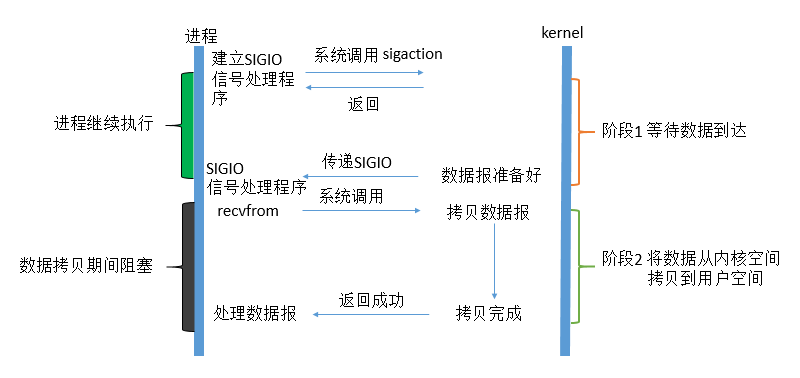

Unix中5种IO模型
最近在学习netty，在这个过程中总是会有一些术语在脑海里面回荡，阻塞式IO/非阻塞式IO/同步/异步。带着这些疑问对Unix中的IO模型做了一些了解。
IO是主存和外部设备（硬盘，终端和网络等）拷贝数据的过程。IO是操作系统底层的功能实现，底层通过IO指令进行完成。下面我们讨论的IO指的都是网络IO。
在Unix中，IO模型有以下5种
- 阻塞式IO（blocking IO)
- 非阻塞式IO(no-blocking IO)
- IO多路复用（IO multiplexing）
- 信号驱动式IO
- 异步IO
对于这五种IO模型，Java并不是一开始就都全部支持，而是有一个逐步演进的过程：
在JDK1.4之前，Java的IO模型只支持阻塞式IO(Blocking IO)，简称为BIO
在JDK1.4时，支持了I/O多路复用模型，相对于之前的IO模型，这是一个新的模型，所以称之为NIO（New IO），有新就有旧，所以有时也把BIO称之为OIO(old IO)，其实都是一个意思。到现在为止，JDK1.8都已经出来了，JDK1.4时引入的nio包，也没有什么新鲜的了，所以更多的人愿意把NIO理解为None-Blocking IO，即非阻塞IO。
在JDK1.7时，对NIO包进行了升级，支持了异步I/O(Asynchronous IO)，简称为AIO，因为是对nio包的升级，所有有时又称之为NIO2.0。
在了解了java的IO模型演进和Unix5种IO模型的关系之后，我们先来了解下一个IO操作的过程：
这里以一个网络IO来举例，对一个一个网络IO来说（read），他会涉及到两个对象，一个是发起IO操作的这个进程，一个是系统内核，发起操作的进程，系统内核是真正工作的对象，而用户程序则需要直接或者间接的通过系统内核来完成工作。当一个read操作发生时，会有以下两个阶段：
- 等待数据准备就绪
- 将数据从内核拷贝到进程中
如下图所示：

图中明显忽略了很多细节，仅显示了涉及到的基本步骤 ，注意图中用户空间和内核空间的概念。
用户空间是常规进程所在区域。 JVM 就是常规进程，驻守于用户空间。用户空间是非特权区域：比如，在该区域执行的代码就不能直接访问硬件设备。
内核空间是操作系统所在区域。内核代码有特别的权力：它能与设备控制器通讯，控制着用户区域进程的运行状态，等等。最重要的是，所有 I/O 都直接（如这里所述）或间接通过内核空间。
当进程请求 I/O 操作的时候，它执行一个系统调用将控制权移交给内核。当内核以这种方式被调用，它随即采取任何必要步骤，找到进程所需数据，并把数据传送到用户空间内的指定缓冲区。内核试图对数据进行高速缓存或预读取，因此进程所需数据可能已经在内核空间里了。如果是这样，该数据只需简单地拷贝出来即可。如果数据不在内核空间，则进程被挂起，内核着手把数据读进内存。
了解了这两个阶段的作用之后，我们接下来就可以深入讲解五种IO模型了，他们的区别就是在两个阶段上上有着不同的逻辑。
阻塞式IO
在linux中，默认情况下所有的socket都是blocking，一个典型的读操作流程大概是这样：
第一步通常涉及等待数据从网络中到达。当所有等待数据到达时，它被复制到内核中的某个缓冲区。
第二步就是把数据从内核缓冲区复制到应用程序缓冲区。

当用户进程调用了recvfrom这个系统调用，kernel就开始了IO的第一个阶段：准备数据。对于network io来说，很多时候数据在一开始还没有到达（比如，还没有收到一个完整的UDP包），这个时候kernel就要等待足够的数据到来。而在用户进程这边，整 个进程会被阻塞。当kernel一直等到数据准备好了，它就会将数据从kernel中拷贝到用户内存，数据的拷贝过程也是阻塞的，数据拷贝完成后kernel返回结果，用户进程才解除 block的状态，重新运行起来。
所以，blocking IO的特点就是在IO执行的两个阶段都被block了。
对应到java中就是我们常用写的io模型：bio
1 | public static void main(String[] args) throws IOException { |
做如下测试：开启两个终端a,b。终端a先telnet到服务，然后终端b后telnet到服务，然后在b中发送消息到服务，会发现，服务b发送的消息并没有立即被服务处理，需要等到a发送了消息到服务并处理后b发送的消息才会被处理。要决绝这个问题，常用的方案就是在接收到一个客户端Socket时就新建一个线程进行处理（或者放到线程池中处理），但这种也并不能很好解决高并发的情况，因为可能大部分连接建立后，客户端和服务器端并没有进行交互，这就导致开出去的线程被空闲的占用，这样服务器性能再高也无济于事。
非阻塞式IO
在linux下，可以通过设置使socket变为非阻塞的，当对一个非阻塞的socket进行读操作时，流程如下：

从图中可以看到在一个进程发起了read操作后，如果没有数据准备好，则会直接返回，而不会再被阻塞在read上了，这个时候就需要进程进行循环，多次询问操作系统是否有数据准备好。当内核中的数据准备好之后，再次收到进程的read操作（system call）则会立即将准备好的数据拷贝到用户空间，注意数据拷贝这个过程是同步的，需要等待数据的复制。
java中实现如下：
1 | public static void main(String[] args) throws IOException, InterruptedException { |
用同样的方式做阻塞式IO中所提到的测试，此时会发现我们并不需要新开线程就能避免终端b发送的消息被处理。
所以，用户进程第一个阶段不是阻塞的,需要不断的主动询问kernel数据好了没有；第二个阶段依然总是阻塞的
这样虽然我们减少了一次阻塞，但是又引发一个问题，过多的系统调用，必然会涉及到用户态和内核态的切换，带来较大的副作用（额外的开销）。
IO多路复用
IO多路复用实现了一个线程监听多个文件句柄，一旦某个文件句柄就绪，就能通知应用程序进行相应的读写操作，没有文件句柄时会阻塞，多路指的是网络连接，复用指的是一个线程。实现方式有select,poll,epoll。
IO多路复用和非阻塞同步IO本质一样，只是用新的select系统调用来做轮训而非用用户进程本身，这样做的好处是减少用户态和内核态的切换，他的基本原理是通过select/poll/epoll来对socket进行不断的轮询，当某一个socket有数据到达时，就通知用户进程。流程如下:
当用户调用了select,那么该进程就会被block住，同时内核会监听被注册到select上的socket，当任何一个socket上发生用户进程所关系的事件，select就会返回，通知用户进行相应的处理，事实上，IO多路复用看起来要比同步非阻塞还差一些。因为这里需要使用两个system call (select 和 recvfrom)，而blocking IO只调用了一个system call (recvfrom)。但是，用select的优势在于它可以同时处理多个connection。（多说一句。所以，如果处理的连接数不是很高的话，使用 select/epoll的web server不一定比使用multi-threading + blocking IO的web server性能更好，可能延迟还更大。
java中的实现如下：
1 | public static void main(String[] args) throws IOException { |
select/epoll的优势并不是对于单个连接能处理得更快，而是在于能处理更多的连接。
在IO multiplexing Model中，实际中，对于每一个socket，一般都设置成为non-blocking，但是，如上图所示，整个用户的process其实是一直被 block的。只不过process是被select这个函数block，而不是被socket IO给block。
信号驱动
信号驱动IO模式是用信号来做的。
应用进程在发起一个IO是通知内核，如果某个IO连接上的某个事件发生时，请向我发送一个信号，在收到信号后，信号对应的处理函数会进行后续处理，一般来说，这个信号是SIGIO。

异步IO
这类函数的工作机制是告知内核启动某个操作，并让内核在整个操作（包括将数据从内核拷贝到用户空间）完成后通知我们。如图：

用户进程发起read操作之后，立刻就可以开始去做其它的事。而另一方面，从kernel的角度，当它受到一个asynchronous read之后，首先它会立刻返回，所以不会对用户进程产生任何block。然后，kernel会等待数据准备完成，然后将数据拷贝到用户内存，当这一切都 完成之后，kernel会给用户进程发送一个signal，告诉它read操作完成了。 在这整个过程中，进程完全没有被block。
JDK在对aio的支持上大致有两种情况：针对windows，由于windows的异步io由一个叫做I/O Completion Ports 的方案，通常教程为iocp,操作系统复制管理线程池，其性能非常由于，JDK则直接采用iocp的支持。对于iocp这里多提一句，如果有朋友之前玩过Gh0st这个远控（10年前的东西了），可能会听说过iocp这个概念，Gh0st的服务端就是采用了iocp来完成网络的处理，这让Gh0st能够应对大量肉鸡连接状态的维护。
参考：